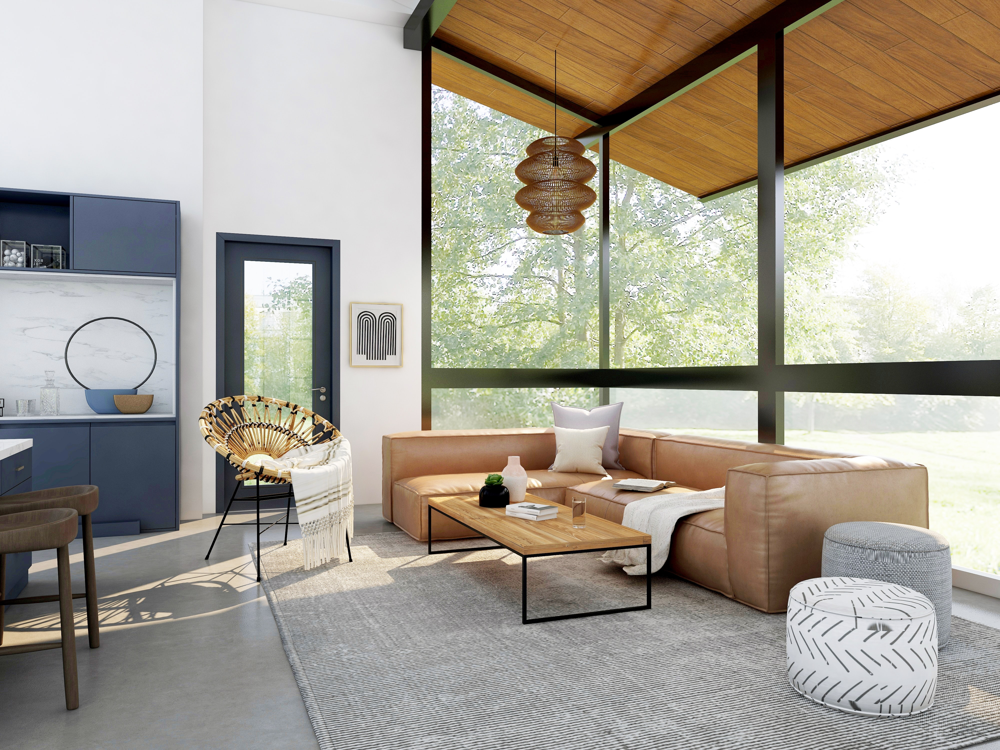
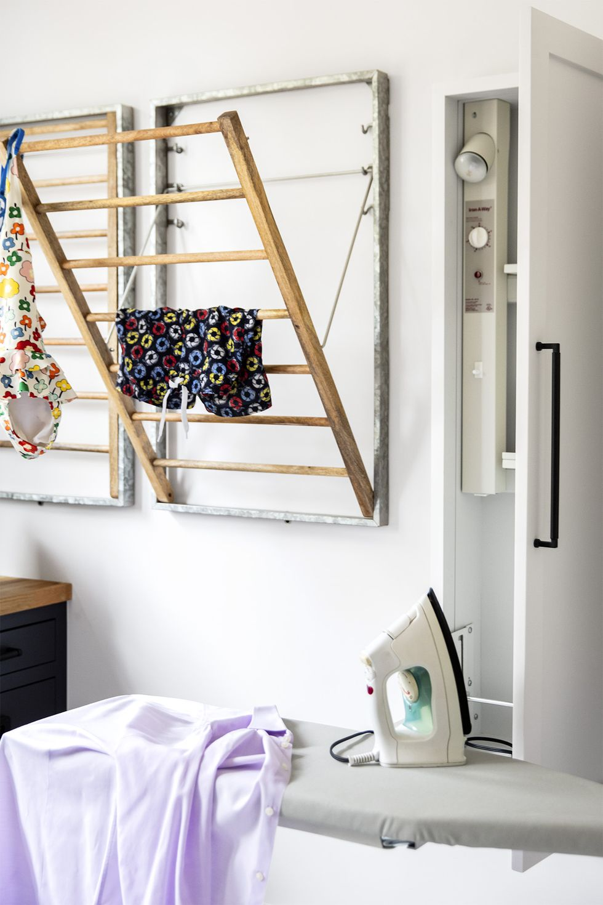
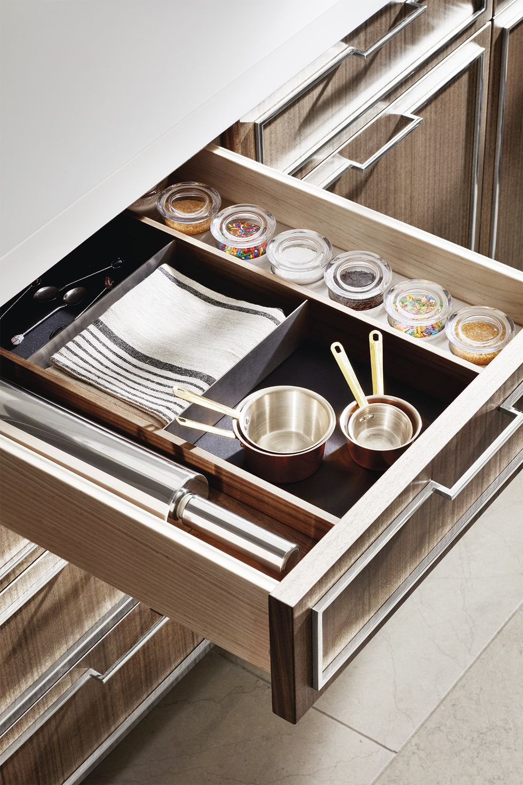
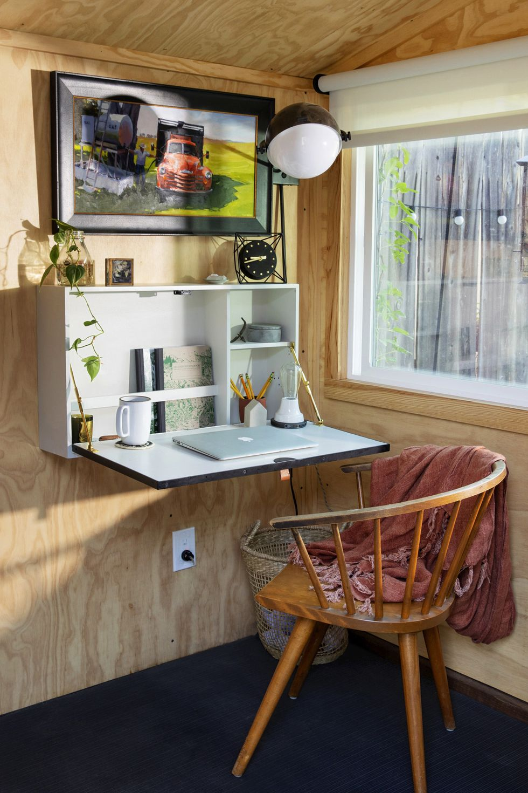
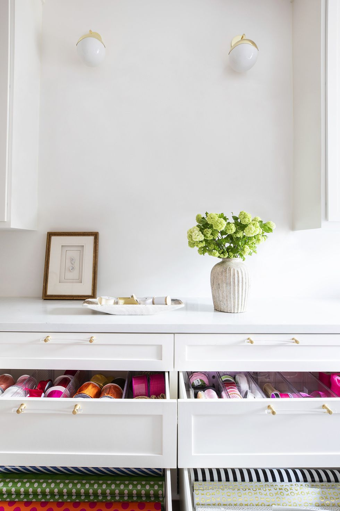
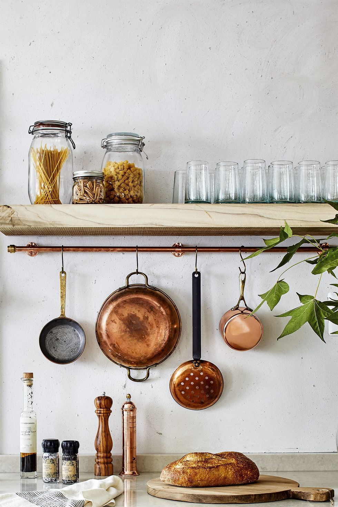
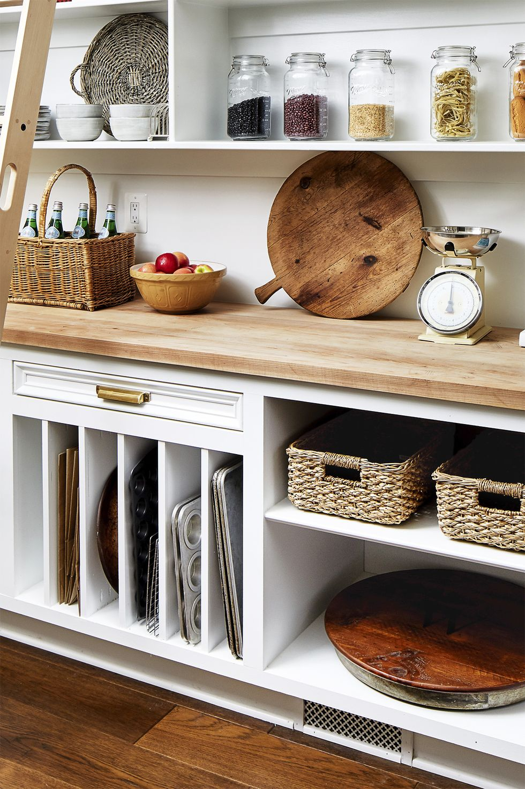

ORGANIZE MY HOME
Our goal is to help give you ideas on
how to organize your home. You can
apply these ideas to your bedroom,
bathroom, living room, dining room
and other spaces. We want to help you
make the most efficient use of your space.

Explore Organizational Ideas
Drying Rack Mount on Wall
Save space in your laundry room by using foldable drying racks
by Thomas Kuoh

Compartmentalize drawers
Group together similar cooking items into categories in your drawers
by Trevor Tondro

Space Saving Desk
Save space in your room by creating a flip-down desk that you can fold up when not in use
by George Barberis

Bins in Drawers
Categorize miscellaneous items in drawers with the use of bins
by Marie Flanigan Interiors

Hang a Pot Rail
Mount a pot rail in your kitchen to hang items such as pots and measuring cups
by Stacy Zarin Goldberg

Vertical Shelves
Organize kitchen items like cutting boards and baking pans using vertical shelves
by Stacy Zarin Goldberg
